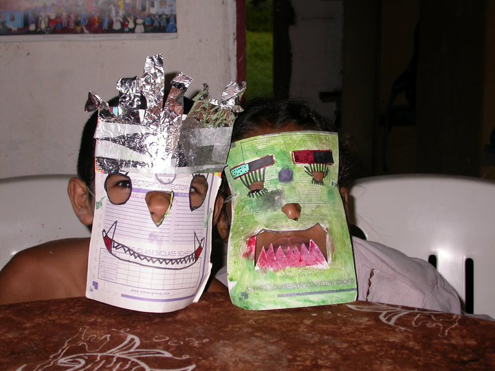

Unpublished Writing
The Legend of El Chupacabra
October 22, 2011
Legends of bloodsucking creatures are present all over the world and throughout history. Seven years ago, I read in La Prensa that a young man was lost on Vulcan Concepcion. He had attempted to climb the volcano without a guide and was ill-prepared for the dangerous trek. Those foolish enough to scale the 1610 meter slopes without assistance are usually seriously wounded, lost, or as in the case of the 24-year-old Salvadoran, eaten by El Chupacabra.

My English students told me that the guides found his body a week later. His head was wedged between two rocks, his leg was broken, and an arm was missing. Luvis pounded her fist on my plastic table when she heard the news and emphatically stated, "It was the Chupacabra." "What in the world is a Chupacabra?" I asked curiously. They all looked at me astounded because I had never heard of the creature.
"The Chupa Cabra is all over the world," Francisco informed me. They began arguing when I asked for a description of the monster. One of my students said he was half goat, half man. The other said he could fly and was probably an alien. Luvis described him with fierce, pointy teeth and an amazing ability to jump from volcano to volcano. Francisco said he only sucked the blood from goats. Luvis said, "No, he eats many people on the volcano because that's where he lives." They all agreed that the monster was dangerous and called him "The goat sucker."
What I did learn to be fact throughout this strange conversation is that the islanders are very superstitious people. They attribute any unexplained death or illness to creatures such as duendes, women that turn into monkeys, monsters that leave the dark lake bed at night in search of blood, and the famous Chupacabra.
Halloween is coming. The children don't celebrate Halloween in La Paloma. Seven years ago, it was different. We taught Luvis and Julio how to say "trick or treat" and helped them make masks.
Luvis was a duende and Julio was the Chupacabra. We taught them to knock on our door on Halloween and say, "trick or treat." We were undecided whether to treat them or trick them, so we did both. We stocked up on cajeta de leche (sort of like fudge) and Ron made no bake chocolate cookies with oatmeal. I dressed up like a fairy (I even made a tin foil wand) and Ron dressed up as a monkey with a machete.
I asked Ron if we should teach all of the little ones that came to our house for English lessons, about 20 of them, about Halloween and invite them to our house for trick or treating. But, thanks to Julio and Luvis, we had a better understanding of the superstitions surrounding our community, and we decided it wasn't a good idea. Our house was the good luck house in the neighborhood. Who knew what the parents might think if we told them to wear scary masks and come to our house for candy. We may have ruined our good reputation in La Paloma. So, it was only Luvis and Julio that came.
Wanted: El Chupacabra
Name: El Chupacabra
Nickname: The goat sucker
Height: 4.5 to 5.5 feet
Weight: Unknown
Eyes: Very large, very red
Build: Half goat, half man, very agile, can hop from one volcano to another, fierce pointy teeth
Likes: Goats, blood, people, chickens, pigs, dogs, cats, travel
Favorite hangouts: The volcanoes on Ometepe Island
Reward: Come to our house on October 31st and receive a piece of candy for any sightings or known whereabouts of El Chupacabra.
This story is one of many. The full journey is in the book.
Get The Monkey Lady's Gift